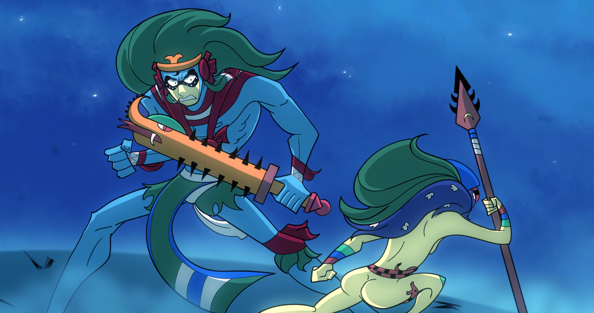
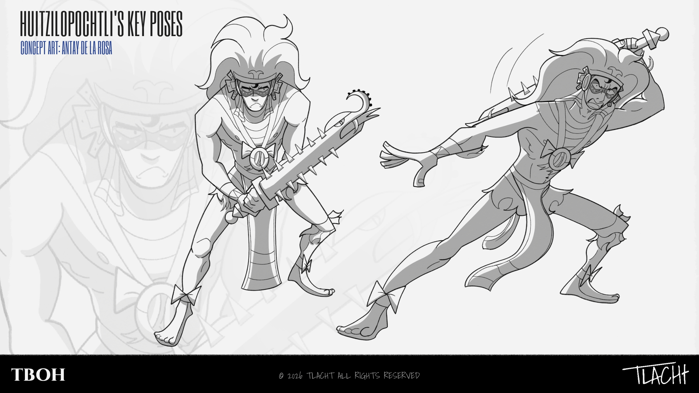
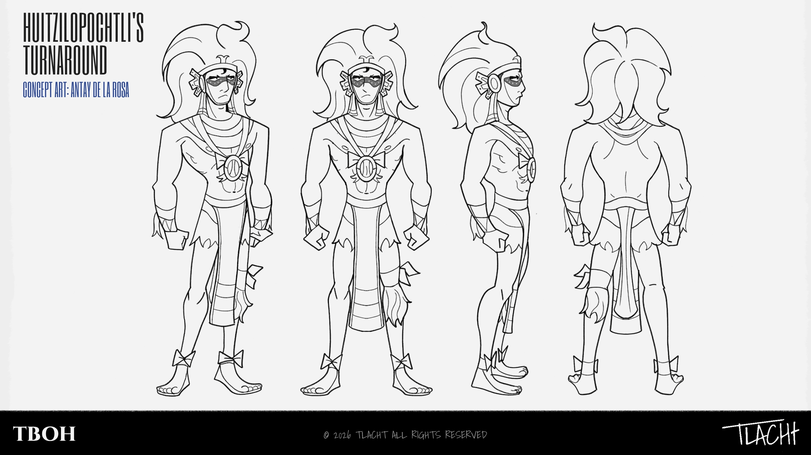
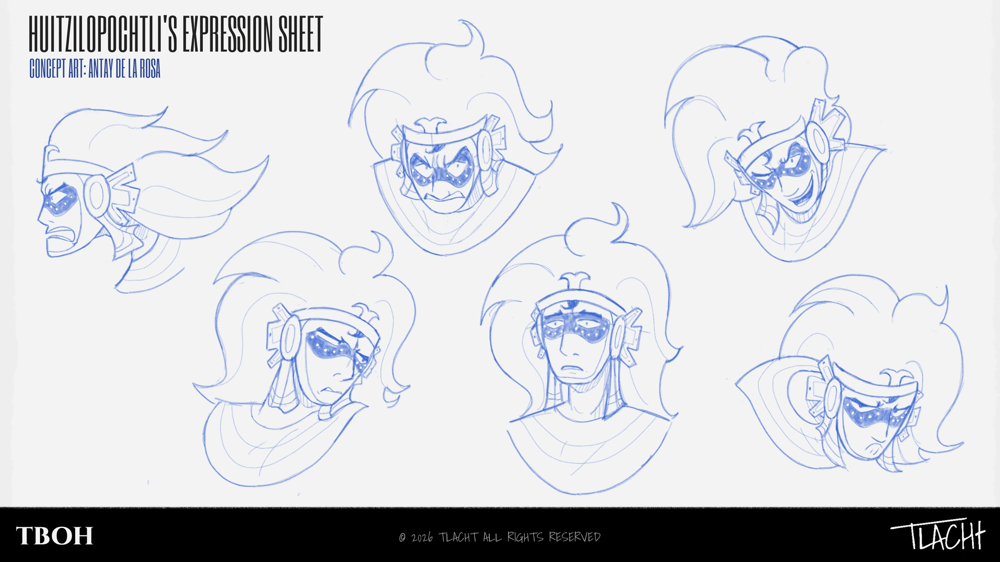
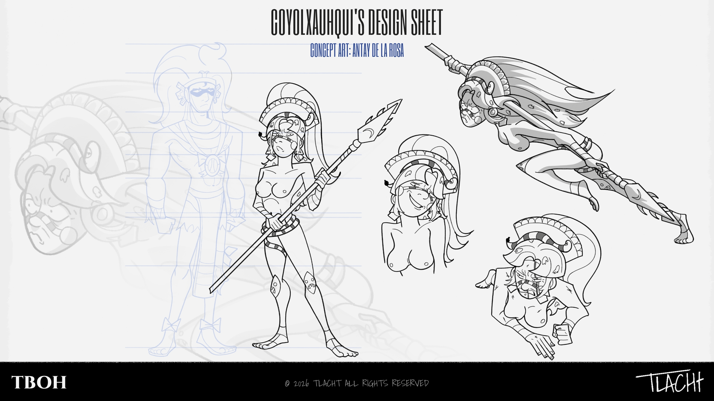
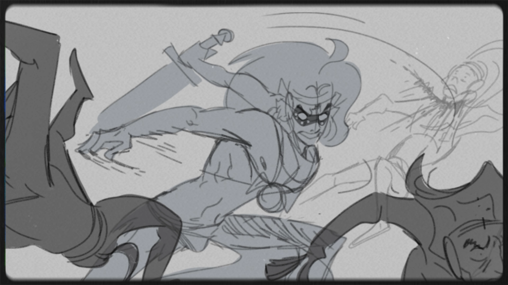

Todo comienza con el autor teniendo un gusto un tanto obsesivo por el dios Mexica de la guerra: Huitzilopochtli. A lo largo de los años estuvo probando con distintos estilizados del personaje, vagando sin rumbo alguno, eso al menos hasta diciembre 2025, donde creó una serie de "frames" al estilo cartoon narrando el mito del nacimiento de la deidad, como si fueran partes pausadas de una serie de CN.

The Birth of Huitzilopochtli está construido para funcionar como una propiedad intelectual multifacética y flexible, diseñada bajo un enfoque transmedia. Más allá de encasillarse en un solo formato o género, el proyecto nace con la capacidad de expandirse hacia distintas narrativas y plataformas tales como animación, editorial o merchandising.



A través de las hojas técnicas, el diseño de Huitz se enfoca en crear una deidad de proporciones estilizadas y líneas afiladas que rompen con la simetría estática tradicional. En las Key Poses se define su dinámica de combate portando la Xiuhcoatl (reinterpretada como macuahuitl), distribuyendo el peso firmemente sobre la cadera para acentuar su postura guerrera. Por otro lado, la Expression Sheet demuestra la amplitud del personaje: un lienzo flexible diseñado para transitar orgánicamente entre la seriedad dramática de una futura serie y la expresividad cómica e irónica que demanda el tono satírico del animatic. El Turnaround técnico consolida su estructura tridimensional lista para animación.

Diseño construido bajo la premisa de agilidad contra fuerza bruta. Su estructura corporal adopta un centro de gravedad bajo para movimientos rápidos y evasivos en combate, complementados por el uso del tepoztopilli (arma de largo alcance para poder hacer frente a Huitzilopochtli). Las hojas respetan la iconografía del mito de la deidad caída de forma honesta, sumando que Coyol no está diseñada para verse linda mientras pelea, es feroz y salvaje.

Al fusionar los storyboards con una propuesta sonora enérgica (Mama Sid Knock You Out de LL COOL J), el animatic se convierte en el núcleo del proyecto actualmente pues no se limita a un solo género, sino que funciona como una propiedad intelectual versátil, con el potencial de moldearse hacia la comedia de acción o la narrativa seriada de entretenimiento.